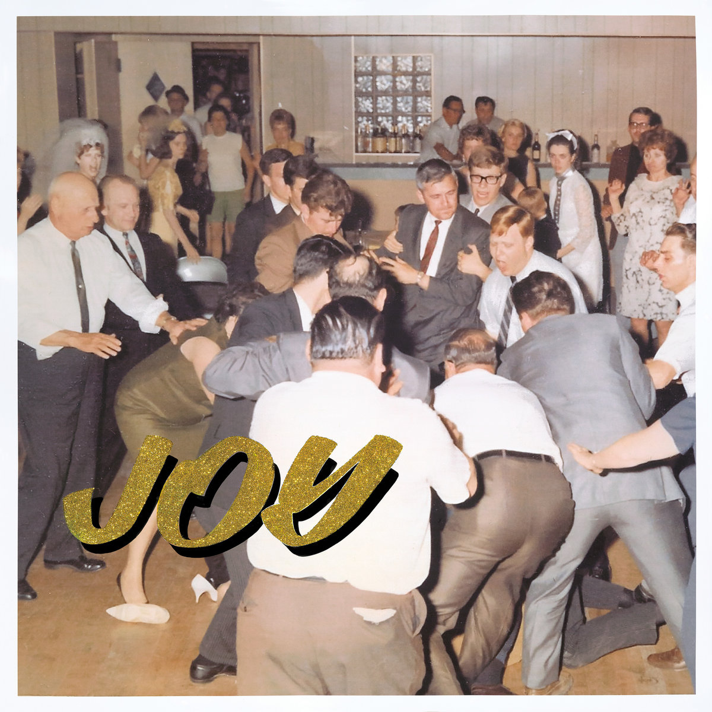
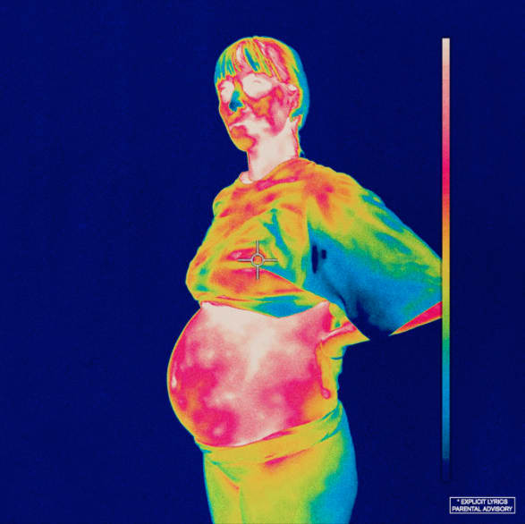

It's finally here boys, music list week for 2018 has officially begun with the top 20 albums of 2018!! Obligatory this is all just my opinion, and if your favourite album is not on
this list, it doesn't neccessarily mean that it was a bad album. Unless your talking about "YUNGBLUD - 21st Century Liability", because that album was trash. Anyways scroll down to view the list!
Back To Main Page
-
Basement - Beside Myself
Genre - Pop Punk; Emo
So kicking off this list is the first "Fueled By Ramen" labelled album that I've actually enjoyed. "Beside Myself" is the 4th full length studio album from Ipswich emo outfit Basement.
Despite it not grabbing me as much as their previous effot, "Promise Everything", I've found myself often either listening to the album, or bits and pieces from it. Tracks such as "Ultraviolet"
& "Stigmata" have especially been played quite frequently towards the end of this year, with the latter reminding me of prime The Butterfly Effect.
-
Low - Double Negative
Genre - Ambient; Electronic; Experimental
I was pretty hestitant on putting this album on the list due to recency bias, because a.o.w (1/12/18), I listened to this album for the first time 2 days ago, and I've only heard it in full around 3 times. But each of those
times it has been one of the most pleasant listening experiences of the year. Low's 12th record "Double Negative" was not what I expected coming into it. Expecting a album full of soft Indie Rock, I instead
experienced what I'll call "The best background music you'll hear this year".
-
Last Dinosaurs - Yumeno Garden
Genre - Alternative; Pop Rock; Indie Dance
"Yumeno Garden" seems to be what you get when you tell Last Dinosaurs to do their own thing, and three albums in, Last Dinosaurs have pretty much consumed my playlists with their banging Indie Dance tunes. The songs "Dominos"
& "Eleven" were some of my most played tracks of the year before this album came out. The only reason that this changed after the album came out, was because songs such as "Bass God" started to replace them.
-
Jack River - Sugar Mountain
Genre - Pop; Pop Rock
I want to state that I don't think there's anything special or unique about this album, except maybe for Holly Rankin's (Jack River) voice. Despite this though, I really like this album. Everything is well executed,
there are genuine tunes on here, and it's been one of my favourite pop albums of the year.
-
awakebutstillinbed - what people call low self-esteem is really just seeing yourself the way that other people see you
Genre - Emo; Hardcore
This is what real music sounds like kiddos. I don't quite remember how I stumbled across this band, but damn I'm excited to see where they head. This albums turns the emo all the way up to 11, with lead singer Shannon's
decision to start screaming wherever she sees fit, lyrics such as "i'll finally shut my mouth, feel both my feet touch ground, put an end to this run, just say the word and i'll jump." If you can't stand this level of angst,
you probably won't enjoy this album, but I recommend giving this one a go anyways. It has some of the most natural instrumentation I've heard in a long time.
-
Tash Sultana - Flow State
Genre - Blues; Alternative
I'm willing to admit I was wrong about Tash. Back in 2016 when Jungle was released, I thought she was just going to be a 1-Hit wonder that would become more and more generic. Instead, on her full length debut, she's
fully cemented her sound, and her sound is good. This album has probably been the biggest surprise enjoyment of the year for me, with some songs such as "Cigarettes" grabbing me the instant I heard them.
-
The Wombats - Beautiful People Will Ruin Your Life
Genre - Pop Rock; Alternative
It's The Wombats, I like them a lot. I like this album quite a bit. They could probably release toilet sounds as an album, I'd still probably rate it this high. But this album isn't toilet sounds, it's
an album of good pop rock songs. "Black Flamingo" is a banger.
-

IDLES - Joy As An Act Of Resistance
Genre - Punk; Post-Punk; Hard Rock
IDLES' polictical, celebrity drug referencing, absoluting heart-breaking sophomore album, "Joy As An Act Of Resistance" crashes it's way to number 13 on this list. Aggresive, banging, and just downright fun
("Brylcreem, Creatine, And a bag of Charlie Sheen" - Never Fight A Man With A Perm), if you're a fan of Post-Punk, you're going to love this. And if you're not, give it a go anyways, because you might just like it anyways.
-
Young Fathers - Cocoa Sugar
Genre - R & B; Hip Hop
The singles off the new Young Fathers album took a while for me to enjoy, but once I did, I decided to give this album a full listen. It's at number 12 of my list, it's kinda obvious at this point that I enjoyed it
in full. I don't usually like R & B, so take that into consideration as well.
-
Rolling Blackouts Coastal Fever - Hope Downs
Genre - Pub Rock; Alternative
Just barely missing out on the top 10 is Rolling Blackout Coastal Fever's debut "Hope Downs". Enjoyable from to start to finish, this album is incredibly well executed, with the only downside being that Rolling
Blackouts Coastal Fever's sound is not really unique, especially if you compare it to other Aussie Pub Rock records. But with descriptive enough lyrics that you can just shut your eyes and let the album do the thinking for you,
it's hard not to love this album.
-
Tiny Little Houses - Idiot Proverbs
Genre - Lo-fi; Folk; Folk Rock; Alternative
Tiny Little Houses opens up my top 10 list with their impressive debut "Idiot Proverbs". This is an album where you can hear some of the influences at first glance, but the more you dig into this album, the more influences
you find. Songs such as "Idiot Proverbs" & "Caroline" have been high up on my most played tracks of the year, with the singles from last year also still holding strong.
Tiny Little Houses is a band that can only evolve from here, and god damn I'm excited for that.
-

Car Seat Headrest - Twin Fantasy (Face To Face) [*2018 Remake]
Genre - Electronic; Dance; Alternative
This version is better than the original by miles, dont @me. I'll still agree with the points I made in my review of this album, but yeah I've enjoyed this album a shit ton. Moments such as "Bodys" show just
important the instrumentation and build up is in this album, and despite being so long, is so god damn rememberable the whole length.
-

The Hard Aches - Mess
Genre - Pop Punk
"It's hard for me, To watch you be, So unhappy, When you're around me" - Happy. An album entriely based around the concept of a failing relationship, The Hard Aches' 2nd studio full length is filled
with some of the best punk songs of the year, with "Happy" not only being Gerogia Maq's best perfomance of the year, but personally one of the most upsetting punk songs of the year.
-
Tropical Fuck Storm - A Laughing Death In Meatspace
Genre - Blues Rock; Pyschedelic; Experimental
The absoluting haunting (in a spooky way) & experimental track "Antimatter Animals" describes this album perfectly, with all the members of Tropical Fuck Storm Shouting out
"Your politics ain't nothing but a fond fuck you!" over screeching guitars and other colliding noises. Absolutely polictical, loud & chilling,
the Melbourne four piece supergroup have put out easily the best blues rock album of the year, and possibly even of the decade.
-

KIDS SEE GHOSTS - KIDS SEE GHOSTS
Genre - Hip Hop & Rap
7 Songs, 23 Minutes, All Banging. Kanye West & Kid Cudi's Collaboration "KIDS SEE GHOSTS" was easily the best thing I've heard from Kanye since "My Beautiful Dark Twisted Fantasy". "4th Dimension"
showcases some of the best sampling of the year, there are some incredibly awesome moments on this album, Cudi is good on this thing, and it's all packed inside 23 minutes of music. Yeah, have fin with this
one kiddos.
-
Hockey Dad - Blend Inn
Genre - Pop Punk
Before I actually had money, Blend Inn was one of the only records I bought at full price, and because of this, has become my most played album of the year, with the track
"I Wanna Be Everybody" ending up with the most amount plays of ANY track this year. Deserving of it's spot, my top 5 kicks off with Hockey Dad's sophomore effort, "Blend Inn"
-
Superorganism - Superorganism
Genre - Prawn Music; Pop; Experimental
Superorganism was an act that I really didn't get the appeal of when they released their debut single "Something For Your M.I.N.D.". By the time they released "Everybody Wants
To Be Famous" however, I finally became sold on this band. Their self titled debut has some of the most interesting pop music, as the collective has put out, in my opinion, the
best debut record of the year.
-
MGMT - Little Dark Age
Genre - Pop; Alternative; Workout Music
I think my biggest regret of my music lists last year was leaving out the title track of this album in my top 100 songs. I'm not gonna be making a similiar mistake with this album this year.
This album came out of nowhere and straight up catapulted to one of my favourite albums of the year. It's always good to see when a band can reinvent themselves entirely and put out something amazing, which
is exactly what MGMT have done here. "Are you ready to workout?" - She works out to much
-

DMA's - For Now
Genre - Rock; Folk
DMA's sophomore effort "For Now" was what I expected to be AOTY for me for such a long time. (Until I heard my actual AOTY) From the darker & matured production, to the familiar
passionate vocals, "For Now" is DMA's at their absolute peak. The Newtown Trio becomes the first artist to reach my Top Ten Albums list more than once since I've started doing these (2016, where DMA's debut got no. 7).
However, you're about to find out they're not the only band to achieve this.
-

BROCKHAMPTON - Iridescence
Genre - Rap & Hip Hop; Electronic, A Bit of fucking everything to be honest.
"Perfectly fine, it's fine" - New Orleans. And coming it at the treasured number one spot is the latest album from American hip hop collective BROCKHAMPTON. After coming in at no.6 last year
with Saturation II, BROCKHAMPTON were definitely high on my artists to look for in 2018 list, and this album proves why. I am currently in the belief that this album is a modern classic, and if
I had bothered to review it, I probably would have given it a 10/10. This album is fantastic in every aspect, with so many god damn songs standing out as the highlight ("NEW ORLEANS", "WEIGHT",
"DISTRICT", "TAPE", "J'OUVERT", "HONEY", "SAN MARCOS", "TONYA"). I implore everyone who hasn't given this a try to listen to this album. To put in some more perspective of how much I loved this
album, from the moment I started created this list, to the point it was finished, this was the only album who's position wasn't even considered being changed. It was just that far ahead of the pack.
Anyways, That's gonna conclude the best albums of the year for 2018. I will give out some honorable mentions to some albums that didn't make it such as Courtney Barnett's Tell Me How You Really Feel,
Wye Oaks' The Louder I Call, The Faster It Runs & The Paper Kites' On The Train Ride Home. There are others as well, but yeah you understand.
Back To Main Page